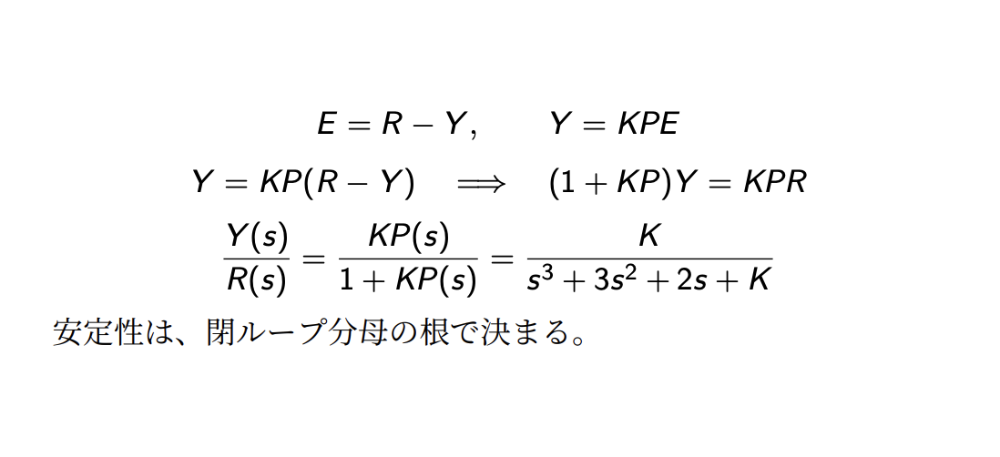
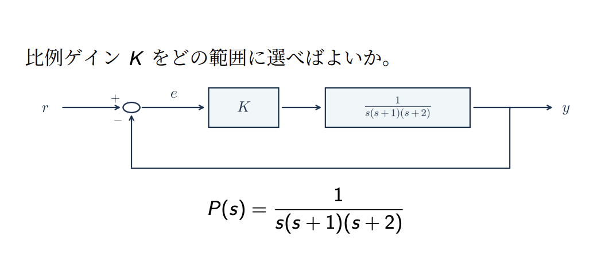

概要
多項式の係数と安定性の関係、ラウス法とフルビッツ法による安定判別について確認する会話です。フィードバック系のブロック線図から式を立て、閉ループ分母の意味を確認しています。
原典：共有会話1
想定読了時間：約8分
共有会話1：講義内容の要約
質問 1
係数が正でも、3 次以上では安定とは限らない。これはなんで？
ChatGPTの回答 1
3次になると、不安定な根が作る負の係数を、別の因数との掛け算で打ち消せるからです。
たとえば、
\[D(s)=(s+2)(s^2-s+3)=s^3+s^2+s+6\]は、展開すると係数がすべて正です。ところが、\(s^2-s+3=0\) の根は
\[s=\frac{1\pm i\sqrt{11}}{2}\]で、実部が \(1/2>0\) なので不安定です。二次因子には \(-s\) があっても、\(s+2\) を掛けると、たとえば \(s^2\) の係数は \(2-1=1\) になります。
2次までなら、正の係数を持つ多項式は \(s\ge0\) で正なので、実数の根はすべて負です。2次で根が共役な複素数の場合も、根の和が \(-a_1/a_2<0\) なので、両方の実部は負です。3次では、負の実根が1つ加わることで、残り2つの根の実部が正でも、全体の係数がすべて正になり得ます。
質問 2
ラウスの安定判別法の結論は？
ChatGPTの回答 2
ラウスの安定判別法は、伝達関数の分母の係数からラウス表を作り、第1列の符号を見る方法です。
1. 最初の2行に係数を交互に入れる
例として、講義の \(D(s)=s^5+s^4+3s^3+2s^2+6s+2\) を使います。最高次係数を正にそろえ、係数を次数の高い順に並べます。
- \(s^5\) の行には、\(s^5,s^3,s^1\) の係数 \(1,3,6\) を入れる。
- \(s^4\) の行には、\(s^4,s^2,s^0\) の係数 \(1,2,2\) を入れる。
2. 直前の2行から次の行を作る
直前の2行を上から \((u_1,u_2,u_3,\ldots)\)、\((v_1,v_2,v_3,\ldots)\) とすると、次の行は
\[\left( \frac{v_1u_2-u_1v_2}{v_1}, \frac{v_1u_3-u_1v_3}{v_1}, \ldots \right)\]です。左端の \(u_1,v_1\) は固定し、右側の列だけずらすと覚えればOKです。足りない欄は \(0\) として計算します。
たとえば \(s^3\) の行は \((1\cdot3-1\cdot2)/1=1\)、\((1\cdot6-1\cdot2)/1=4\) です。同じ計算を繰り返します。
| 行 | 第1列 | 第2列 | 第3列 |
|---|---|---|---|
| \(s^5\) | 1 | 3 | 6 |
| \(s^4\) | 1 | 2 | 2 |
| \(s^3\) | 1 | 4 | 0 |
| \(s^2\) | −2 | 2 | 0 |
| \(s^1\) | 5 | 0 | 0 |
| \(s^0\) | 2 | 0 | 0 |
3. 第1列を上から読む
符号が変わる回数が、実部が正の根の個数です。この例では \(+,+,+,-,+,+\) と 2回変わるので、不安定です。通常の計算で第1列がすべて正なら安定です。
第1列だけが \(0\) なら、その \(0\) を \(\varepsilon>0\) に置き換えて計算し、\(\varepsilon\to0^+\) で符号を見ます。行全体が \(0\) なら、直上の行から作った多項式を微分し、その係数でゼロの行を置き換えます。
質問 3
フルビッツの判定方法のやり方は？
ChatGPTの回答 3
フルビッツの判定法は、分母の係数から行列を作り、左上から切り出した小行列の行列式がすべて正かを調べる方法です。
1. 係数を交互に並べて行列を作る
まず最高次係数を正にそろえます。\(n\) 次式なら、\(n\times n\) の行列を作ります。
- 1行目は、最高次の一つ下の係数から一つおきに並べる。
- 2行目は、最高次の係数から一つおきに並べる。
- 3、4行目は、1、2行目を右に1列ずらす。以降も2行ごとに右に1列ずらし、空欄には \(0\) を入れる。
たとえば、講義の \(D(s)=s^3+3s^2+2s+K\) では、1行目が \((3,K,0)\)、2行目が \((1,2,0)\) なので、
\[H= \begin{pmatrix} 3 & K & 0\\ 1 & 2 & 0\\ 0 & 3 & K \end{pmatrix}\]となります。
2. 左上から \(1\times1,\ 2\times2,\ 3\times3\) と切り出す
それぞれの行列式を計算します。
\[\Delta_1=3,\qquad \Delta_2= \begin{vmatrix} 3&K\\ 1&2 \end{vmatrix} =6-K,\qquad \Delta_3=\det H=K(6-K).\]3. 行列式がすべて正になる条件を求める
\(\Delta_1,\ldots,\Delta_n\) がすべて正 ⇔ すべての根の実部が負です。
この例では、まず \(\Delta_2>0\) から \(K<6\)。その条件のもとで \(\Delta_3>0\) にするには \(K>0\) が必要なので、安定範囲は \(0<K<6\) です。
質問 4
これは何が起きている？フィードバック系ってなんですか？E = R − Y , Y = KPEという式はどうやってたててるの？閉ループ分母とは？


ChatGPTの回答 4
この図では、実際の出力 \(y\) を目標 \(r\) と比べて、そのズレに応じて入力を調整しています。出力を手前に戻して、次の入力を決めるために使う仕組みがフィードバック系です。
たとえば、車の速度を \(60\ \mathrm{km/h}\) に保ちたいとします。実際の速度が \(55\ \mathrm{km/h}\) なら、ズレは \(60-55=5\) です。このズレに比例してアクセルを調整するのが、図の \(K\) の役割です。
\(E=R-Y\)、\(Y=KPE\) は図のどこから出る？
図の小文字 \(r,e,y\) は時間の関数で、大文字 \(R,E,Y\) はそれぞれのラプラス変換です。矢印に沿って読むと、式が立ちます。
- 左の丸では、目標 \(R\) が \(+\) 側、戻ってきた出力 \(Y\) が \(-\) 側に入るので、出ていく誤差は \(E=R-Y\) です。
- \(K\) の箱は誤差を \(K\) 倍します。箱から出る操作入力を \(U\) とすると、\(U=KE\) です。
- \(P(s)\) の箱は操作入力 \(U\) を受け取る制御対象です。伝達関数が \(P(s)\) なので、\(Y=P(s)U=P(s)KE\) です。スライドではこれを \(Y=KPE\) と書いています。
閉ループ分母って何？
下の線で出力が手前に戻り、経路が一周するので閉ループと呼びます。閉ループ伝達関数は、この戻り線まで含めた系全体の、目標 \(R\) から出力 \(Y\) への伝達関数 \(Y/R\) です。
\[Y=KP(R-Y) \quad\Longrightarrow\quad (1+KP)Y=KPR \quad\Longrightarrow\quad \frac{Y}{R}=\frac{KP}{1+KP}.\]ここに \(P(s)=1/[s(s+1)(s+2)]\) を代入し、分子・分母に \(s(s+1)(s+2)\) を掛けると、
\[\frac{Y(s)}{R(s)} =\frac{K}{\underbrace{s(s+1)(s+2)+K}_{\text{閉ループ分母}}} =\frac{K}{s^3+3s^2+2s+K}.\]つまり、出力を戻す仕組みを入れると、系全体の分母に \(K\) が入ります。 だから \(K\) を変えると根の位置も変わります。次のスライドでは、この分母にラウス法やフルビッツ法を使って、すべての根の実部が負になる範囲 \(0<K<6\) を求めています。
質問 5
フルビッツの判定方法の行列って何次元まで書くの？
ChatGPTの回答 5
判定する多項式が \(n\) 次なら、フルビッツ行列は \(n\times n\) まで書きます。その行列の左上から \(1\times1,\ 2\times2,\ \ldots,\ n\times n\) を切り出し、それぞれの行列式が正かを調べます。
今回の閉ループ分母 \(D(s)=s^3+3s^2+2s+K\) は 3次なので、作る行列は \(3\times3\) です。確認する行列式は \(\Delta_1,\Delta_2,\Delta_3\) の3つです。